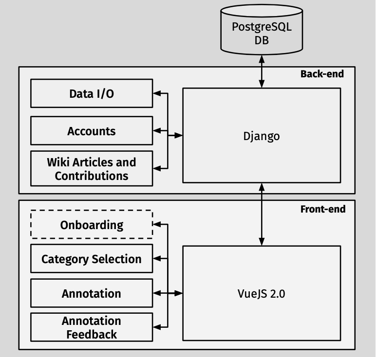

Preenchimento das perguntas e respostas
4.2. PIAFAnno System Architecture
Before launching our development effort, we reviewed ex- isting open-source platforms that could fit for our scenario. Unfortunately, while there are several sequence-annotation tools, such as brat (Stenetorp et al., 2012), WebAnno (Yi- mam et al., 2013), or Doccano8 (Nakayama et al., 2018), we identified, to the best of our efforts, only three candi- dates as open-source, web-based, QA annotation platforms (shown in Table 2). We aim to fill this gap with PIAFAnno. The crowd-sourcing platform used in the original SQuAD paper (Rajpurkar et al., 2016), Daemo (Gaikwad et al., 2015), is publicly available and open-source.9 Nonethe- less, its development seems to have stalled and the project appears not actively maintained. Turning to the specific QA annotation platforms, we sur- veyed two tools: cdQA-annotator (Mikaelian et al., 2019) and QA-Turk (Fisch, 2018). The former is a part of a larger web-based QA suite. The annotation workflow in cdQA-annotator allows for direct selection of the answer span, which facilitates the task. Furthermore, it uses the SQuADv1.1 file format for input and output files. Nonethe- less, it includes neither contribution nor user management capabilities. Conversely, QA-Turk, based on ieturk (Quach, 2018), is an add-on allowing to create question-answers pairs. By default, it uses Amazon Mechanical Turk as a crowd-sourcing back-end, but can be used with a local- based alternative. While also tailored for crowd-sourcing, it does not support different roles for the contributors. We note that, while these two platforms do not satisfy our re- quirements, they include valuable features such as Mechan- ical Turk integration for QA-Turk or the QA tools included in the cdQA suite (model training, visualization, explo- ration). Finally, those tools do not seem to allow collection of additional answers for a subset of the data (as mentioned above, this allows to both make the evaluation data more robust, and to compute human performance).

Figure 1: PIAFAnno system architecture.
Copie e cole abaixo um trecho do texto que resume a imagem
Elabore uma pergunta cuja resposta é um trecho do campo acima
Resposta referente à pergunta acima
Pressione o botão abaixo para armazenar suas respostas
Enviar respostas
Acesse novamente as instruções se tiver alguma dúvida.